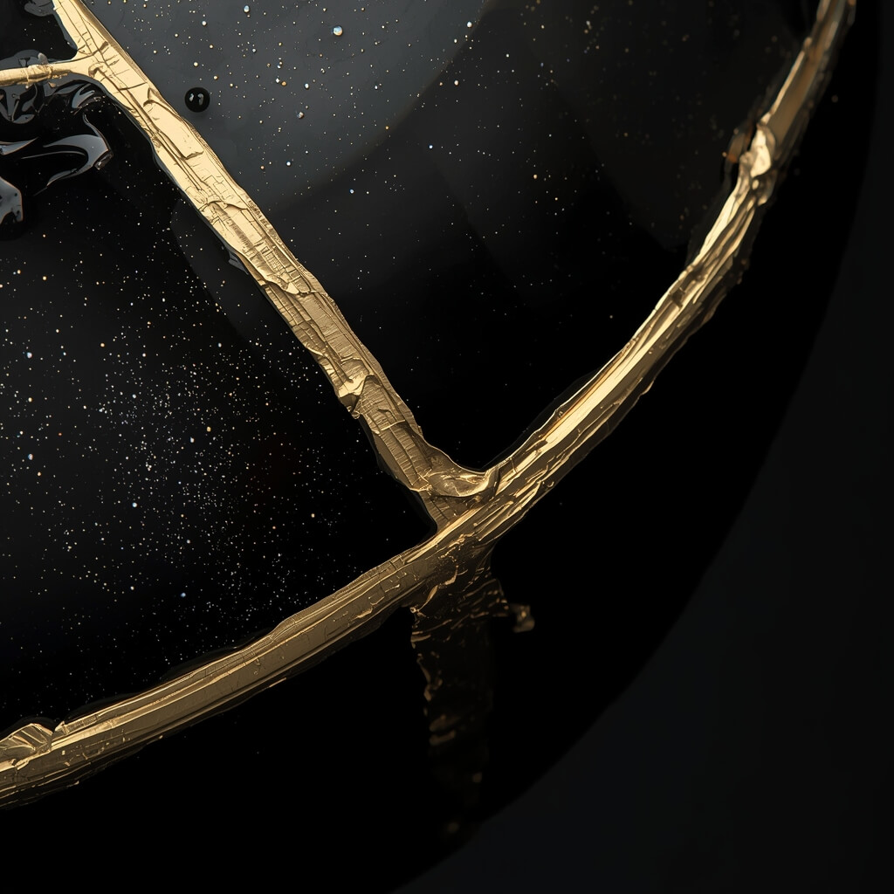
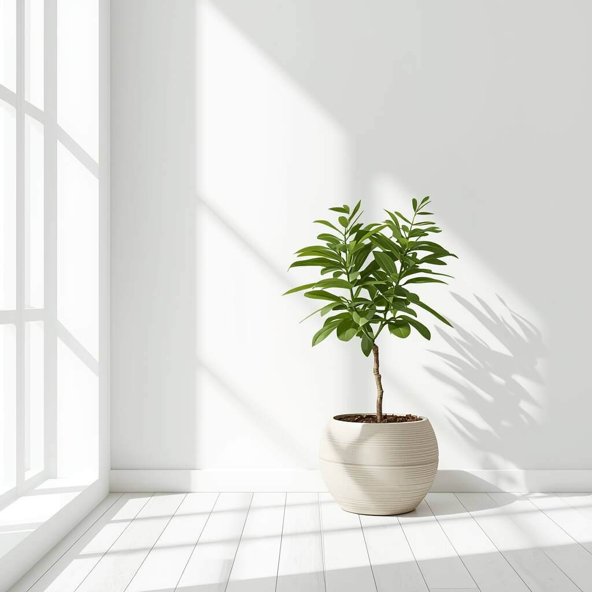

Últimas Descobertas
Autoconhecimento
O Poder Oculto do Silêncio
Por que a quietude é a ferramenta mais poderosa dos líderes modernos.

Bem-estar
A Arte Japonesa do Kintsugi
Como transformar suas cicatrizes emocionais em ouro e resiliência.

Vida Simples
Destralhando a Mente
Aprenda a remover o ruído cognitivo e focar no que é essencial.